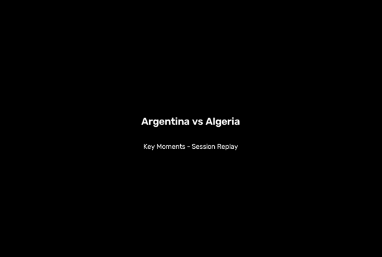

Eleven — Tactical Session Replay
Argentina vs Algeria
FIFA World Cup 2026 · 2026-06-28 · 3-0
Session Replay

Condensed annotated broadcast — detections, teams and ball over the real footage.
…represented on the 2D pitch

Full first half, continuous (00:00–46:59). Relative positions; calibrated metrics on key windows — see Stats.
Hollow markers = last seen position (off-camera), cleared when the area re-enters view.
Events Timeline
⚡ 35:26 · H1Argentina — high press2× high press, 1× possession change, 1× transition, 1× attacking movement within 9s
Situation: Argentina transitions from the middle third to the attacking third via a long ball.
Action: Argentina midfielder executes a direct switch of play via a long diagonal pass to the right flank, bypassing Algeria's mid-block to establish possession in the attacking third.
Outcome: chance_created (success: True)
⚽ 40:11 · H1Algeria — dangerous attack1× attacking movement, 1× dangerous attack within 8s
Situation: Algeria builds up down the left flank against Argentina's compact mid-block.
Action: Algeria left winger executes a wide progression run to bypass Argentina's mid-block, resulting in a crossing opportunity.
Outcome: chance_created (success: True)
Key moments cut (80s) — key_moments.mp4
Stats Panel
Formations (m)
partial shape detected: 3-3-2-1 (9 players visible) vs partial shape detected: 3-4-1 (8 players visible)
Possession
57.2% – 42.8%
Events (118)
possession change: 87, attacking movement: 26, dangerous attack: 3
Threat index
A: 4.84 · B: 5.39
Attacking phases (movements + dangerous)
A: 14 · B: 15
Field tilt
A: 17.0% attacking third · B: 31.2% attacking third
Team block (calibrated moments)
A: 41.2×45.4 m · B: 30.6×47.2 m
Line spacing (calibrated moments)
A: 21.4 m · B: 16.6 m
Players on pitch (CV avg)
17.2
metrics from calibrated key moments (59s of play, 5 windows) — NOT full-match values
Players on pitch: detections whose calibrated position falls inside the pitch bounds, calibrated frames only — raw detections also include bench/staff.
AI Halftime Advice
Consider continuing to attack the space at the edge of Algeria’s block with early diagonals and cutbacks, rather than forcing central combinations, because the 35:30-35:32 switch created a chance and multiple sequences note the arc left vacant.
Evidence: SAO triplet at 35:30-35:32; sequence 1 and 3 vulnerabilities repeatedly cite space at the edge of the penalty area and second-ball openings.
Consider tightening rest-defense behind Argentina’s attacking line, because Algeria’s left-flank progression at 40:19-45:03 and the repeated notes about quick counters show the block can be exposed if possession is lost high.
Evidence: Sequence 16 SAO triplet (Algeria left winger carry -> chance_created); sequence 2 and 15 vulnerabilities note counter-attack risk behind advanced positioning.
Consider using a slightly wider attacking structure in possession to stretch Algeria’s 3-4-1 mid-block, since their central compactness is consistently denying vertical lanes but leaving wide switches available.
Evidence: Dashboard formations: Argentina partial 3-3-2-1 vs Algeria partial 3-4-1; sequence 2 notes wide circulation stretching the block, and sequence 14 shows a successful flank bypass.
Consider assigning a dedicated edge-of-box runner for second balls on both attacking and defending dead balls, because the same vacancy around the penalty arc keeps appearing in the set-piece sequences.
Evidence: Sequences 3, 4, 5, 7, 8, 10, and 12 all mention the edge of the box being open for rebounds/late runners.